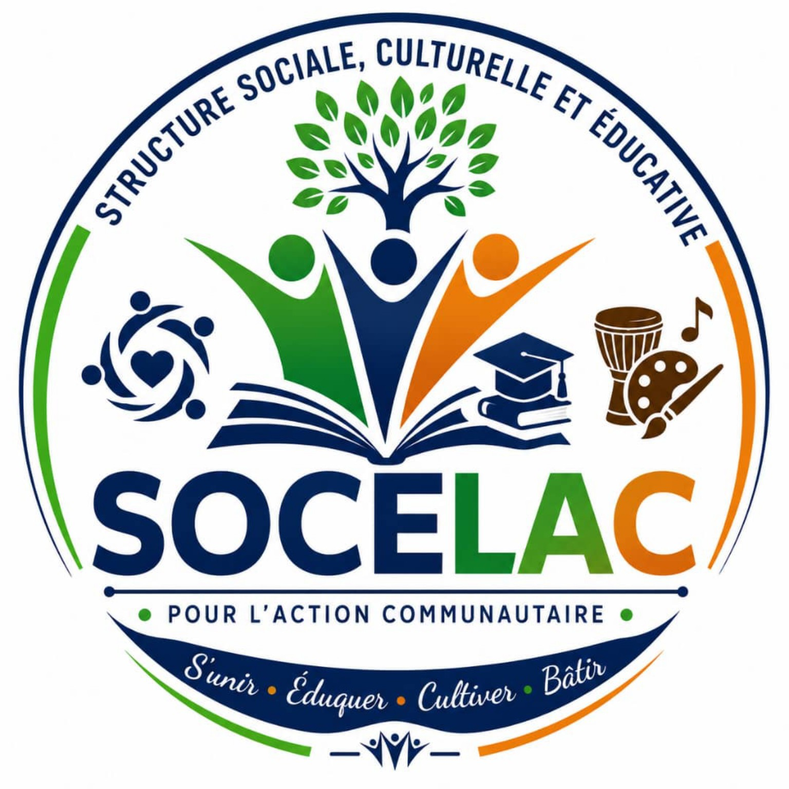

S
Solidarité
Encourager l’entraide, le respect et la coopération entre les membres et les communautés.

SOCELAC
SOCELAC, Structure Sociale, Culturelle et Éducative pour l’Action Communautaire, rassemble les énergies, les compétences et les initiatives qui contribuent au développement de la communauté.
Pour l’action communautaire, l’éducation, la culture et le développement social.
SOCELAC place l’humain, l’éducation, la culture et l’engagement communautaire au cœur de son approche.
Chaque initiative de SOCELAC doit rester cohérente avec notre volonté de servir la communauté avec responsabilité.
Encourager l’entraide, le respect et la coopération entre les membres et les communautés.
Valoriser les expressions culturelles, les talents, l’identité et le patrimoine.
Promouvoir l’apprentissage, la formation et le développement des compétences.
Transformer les idées en initiatives concrètes, utiles et adaptées aux besoins identifiés.
SOCELAC cherche à développer une culture de participation et d’initiative au sein de la communauté.
Développer des actions sociales, culturelles et éducatives qui favorisent la participation, l’apprentissage, la créativité et la coopération.
Encourager une dynamique dans laquelle les citoyens, particulièrement les jeunes, peuvent contribuer à des initiatives positives et durables.
Cette présentation peut accueillir les projets, ateliers, rencontres et campagnes officiels de SOCELAC.
Ateliers, séances de formation, accompagnement et partage de connaissances.
Proposer une initiative →Activités artistiques, patrimoine, expression créative et valorisation des talents.
Proposer une initiative →Initiatives de proximité, sensibilisation et accompagnement communautaire.
Proposer une initiative →Développement des capacités, prise de parole, responsabilité et travail en équipe.
Proposer une initiative →Espaces d’expression, d’apprentissage et de participation destinés aux jeunes.
Proposer une initiative →Projets collectifs, rencontres locales et actions répondant aux besoins identifiés.
Proposer une initiative →Les compteurs sont prêts à recevoir les données officielles de SOCELAC.
Une démarche simple pour organiser les initiatives avec clarté et responsabilité.
Identifier les besoins, les idées et les attentes exprimées par la communauté.
Définir les objectifs, les ressources, les responsabilités et les étapes de l’initiative.
Mettre en œuvre les activités avec coordination, respect et participation.
Recueillir les résultats et les retours afin d’améliorer les prochaines actions.
SOCELAC peut servir de cadre de collaboration pour les personnes, associations, groupes de jeunes et partenaires qui souhaitent développer des initiatives sociales, culturelles et éducatives.
Une bonne initiative commence par une écoute attentive, une organisation claire et une volonté de travailler ensemble.
Ajoutez ici les dates, lieux et informations officielles des prochaines activités SOCELAC.
Une rencontre consacrée au partage de connaissances et au développement des compétences.
Un espace de découverte, d’expression et de valorisation des talents et du patrimoine.
Une initiative collective organisée autour d’un besoin identifié au sein de la communauté.
Contactez-nous pour partager votre idée, proposer une collaboration ou demander des informations.
SOCELAC signifie « Structure Sociale, Culturelle et Éducative pour l’Action Communautaire ».
Les domaines présentés sont l’éducation, la culture, l’action sociale, le leadership, la jeunesse et l’engagement communautaire.
Utilisez le formulaire de contact ou communiquez directement avec SOCELAC par e-mail ou WhatsApp.
Envoyez vos coordonnées et votre motivation via le formulaire. L’équipe pourra ensuite vous communiquer les informations officielles.
Par e-mail à ssocelac@gmail.com ou par téléphone et WhatsApp au +509 39 94 9878.
Écrivez-nous pour demander une information, proposer une initiative ou explorer une collaboration.